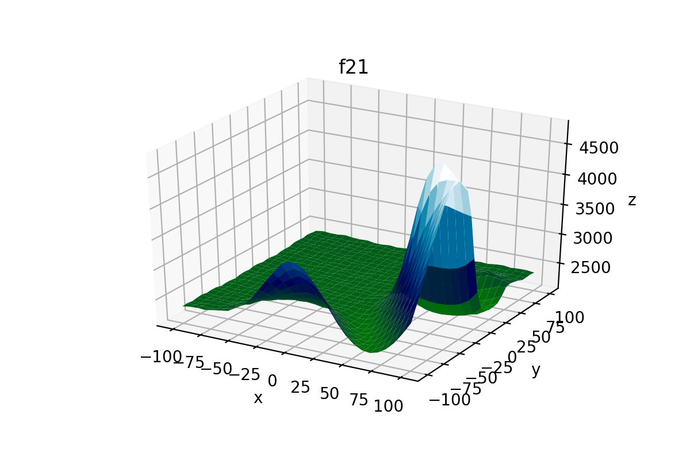
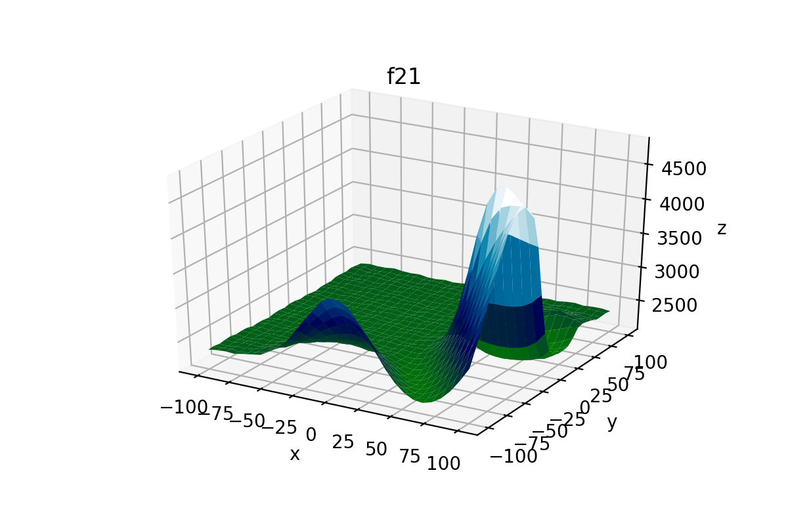

Example 4: Benchmarks¶
Example of accessing and plotting the built-in benchmark functions in NEORL.
Summary¶
Algorithms: No Algorithms
Type: Continuous, Single-objective
Field: Benchmarking, Mathematical Optimization
Problem Description¶
We present an overview of how to access the benchmark functions in NEORL to allow easy testing of different algorithms within the framework. For example, a long list of classical mathematical functions is saved within NEORL such as the Rosenbrock function
or Ackley function
or Bohachevsky function
More recent and advanced benchmark functions were also developed such as the CEC’2017 test suite, which includes 30 benchmark functions divided into three groups: Simple (f1-f10), Hybrid (f11-f20), and Composition (f21-f30). The core of the CEC’2017 functions is similar to the classical functions listed above. However, CEC’2017 functions are rotated and shifted to make them more complex to optimise. CEC’2017 functions are only defined at specific dimensions, namely, d=2, 10, 20, 30, 50 or 100.
NEORL script¶
import numpy as np
import neorl.benchmarks.cec17 as functions #import all cec17 functions
import neorl.benchmarks.classic as classics #import all classical functions
from neorl.benchmarks.classic import ackley, levy, bohachevsky #import specific functions
from neorl.benchmarks.cec17 import f3, f10, f21 #import cec17 specific functions
from neorl.benchmarks import bench_2dplot #import the built-in plotter
d1 = 2 #set dimension for classical functions
d2 = 10 #set dimension for cec functions (choose between 2, 10, 20, 30, 50 or 100)
print('------------------------------------------------------')
print('Classical Functions')
print('------------------------------------------------------')
for f in classics.all_functions:
sample = np.random.uniform(low=0, high=10, size=d1)
y = f(sample)
print('Function: {}, x={}, y={}'.format(f.__name__, np.round(sample,2), np.round(y,2)))
print('------------------------------------------------------')
print('CEC2017 Functions')
print('------------------------------------------------------')
for f in functions.all_functions:
sample = np.random.uniform(low=-10, high=10, size=d2)
y = f(sample)
print('Function: {}, x={}, y={}'.format(f.__name__, np.round(sample,2), np.round(y,2)))
print('------------------------------------------------------')
print('Function Plotter')
print('------------------------------------------------------')
bench_2dplot(f3, domain=(-50,50), points=60)
bench_2dplot(f10, savepng='ex4_f10.png')
bench_2dplot(f21, savepng='ex4_f21.png')
bench_2dplot(ackley, savepng='ex4_ackley.png')
bench_2dplot(levy, domain=(-10,10))
bench_2dplot(bohachevsky, points=50)
#------------------------------------------------------------------------------
#NOTE: CEC'17 functions: f11-f20, f29, f30 are not defined for d=2 dimensions,
#so the plotter will FAIL for these functions
#------------------------------------------------------------------------------
Results¶
Selected results from the script output are shown below, which indicates the function evaluation with a random sample
------------------------------------------------------
Classical Functions
------------------------------------------------------
Function: sphere, x=[4.17 7.2 ], y=69.28
Function: cigar, x=[0. 3.02], y=9140499.76
Function: rosenbrock, x=[1.47 0.92], y=151.59
Function: bohachevsky, x=[1.86 3.46], y=27.63
Function: griewank, x=[3.97 5.39], y=0.48
Function: rastrigin, x=[4.19 6.85], y=74.97
Function: ackley, x=[2.04 8.78], y=15.35
.
.
.
------------------------------------------------------
CEC2017 Functions
------------------------------------------------------
Function: f1, x=[ 3.89 -1.72 -9. 0.72 3.28 0.3 8.89 1.73 8.07 -7.25], y=276294024527.33
Function: f2, x=[-7.21 6.15 -2.05 -6.69 8.55 -3.04 5.02 4.52 7.67 2.47], y=1.39057e+18
Function: f3, x=[ 5.02 -3.02 -4.6 7.92 -1.44 9.3 3.27 2.43 -7.71 8.99], y=104499271.6
Function: f4, x=[-1. 1.57 -1.84 -5.26 8.07 1.47 -9.94 2.34 -3.47 0.54], y=6142.43
Function: f5, x=[ 7.72 -2.85 8.17 2.47 -9.68 8.59 3.82 9.95 -6.55 -7.26], y=738.82
Function: f6, x=[ 8.65 3.94 -8.68 5.11 5.08 8.46 4.23 -7.51 -9.6 -9.48], y=817.43
Function: f7, x=[-9.43 -5.08 7.2 0.78 1.06 6.84 -7.52 -4.42 1.72 9.39], y=916.24
.
.
.
------------------------------------------------------
Function Plotter
------------------------------------------------------
.
.
.
Few samples from the function plots are shown below
 

{kind=link}